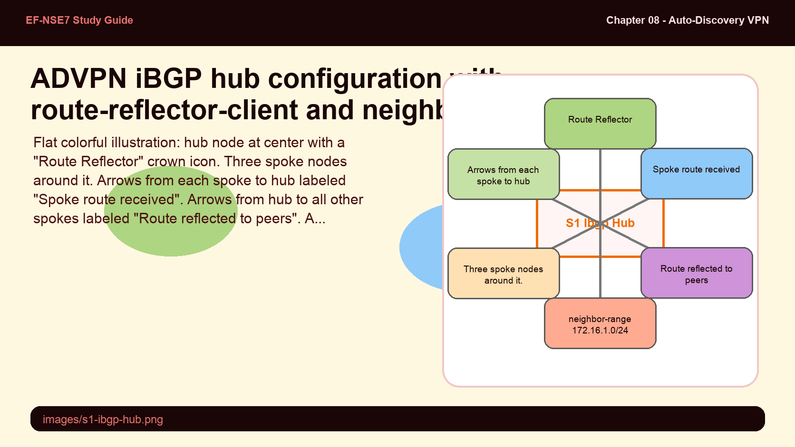
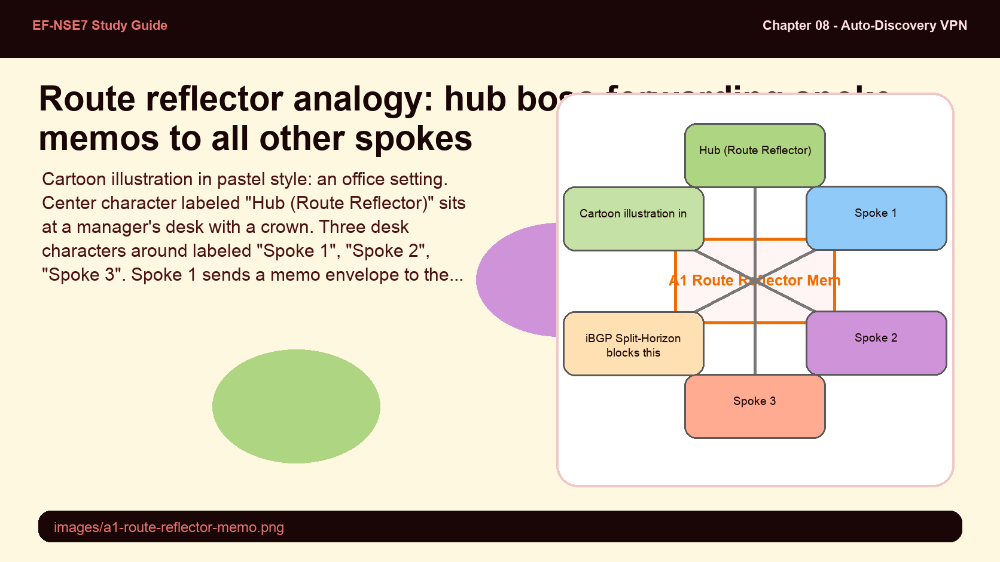
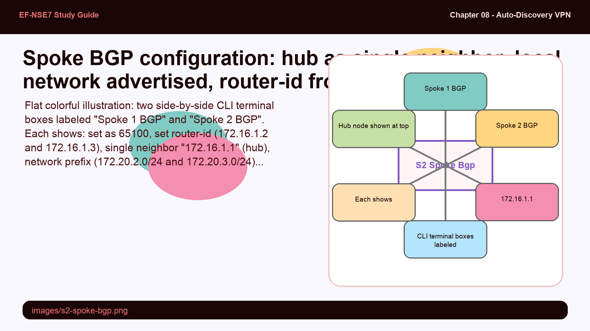
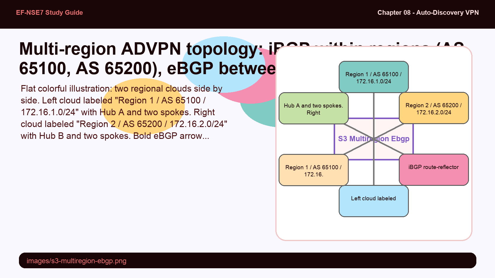
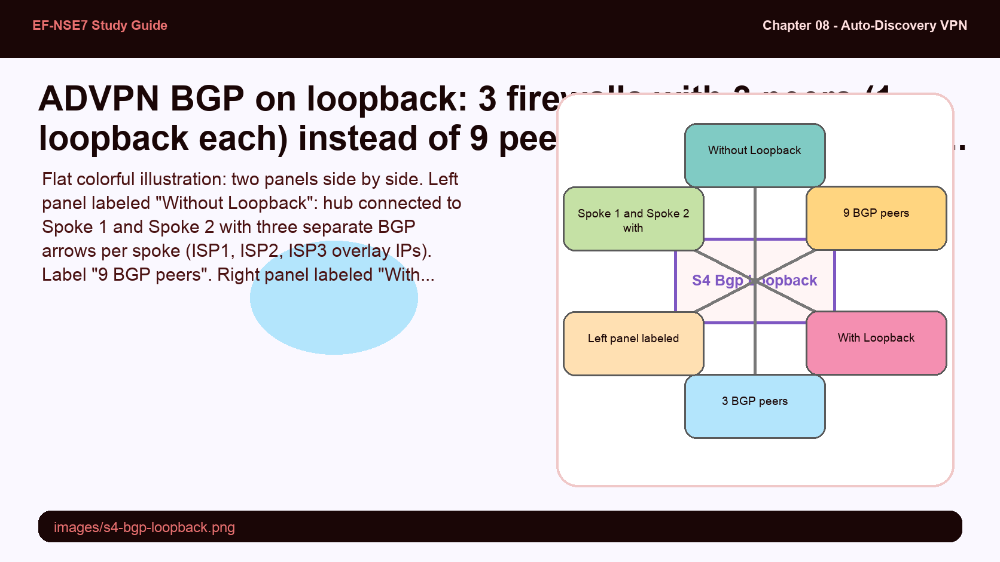
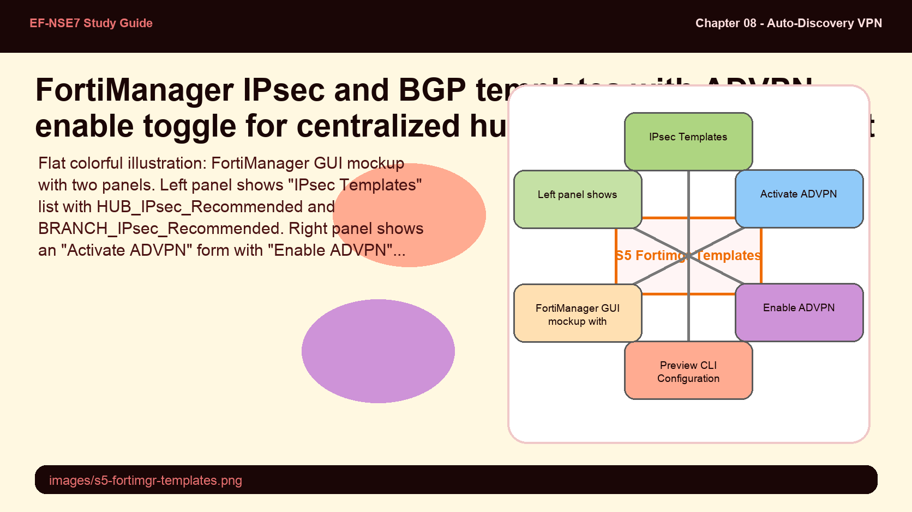

In ADVPN, the hub must act as a BGP route-reflector so that routes learned from one spoke are redistributed to all other spokes. Without route-reflection, standard iBGP split-horizon rules prevent spoke-to-spoke route advertisement. The hub also uses neighbor-range instead of individual neighbor statements — think about why that matters at scale.
- Why must the hub be configured as a route-reflector-client for the spoke neighbor group? What specific iBGP rule does route-reflection override, and what breaks if you forget this setting?
- The hub uses neighbor-range with a prefix covering the entire overlay network (e.g. 172.16.1.0/255.255.255.0) instead of defining each spoke individually. What operational advantage does this provide?
iBGP Hub Configuration — Route Reflector

Hub BGP: AS 65100, router-id = hub overlay IP, neighbor-group "Overlay1" with route-reflector-client enable, neighbor-range 172.16.1.0/24. Hub advertises its own local network (10.0.12.0/24).
In a single-region ADVPN deployment with a single internet connection per firewall, iBGP (Internal Border Gateway Protocol) is used to route within the ADVPN overlay. All hub and spokes belong to the same AS (e.g., 65100). The hub serves as a BGP route reflector — a critical role that allows routes learned from one spoke to be re-advertised to all other spokes, bypassing iBGP's split-horizon rule.
config router bgp
set as 65100
set router-id 172.16.1.1
config neighbor-group
edit "Overlay1"
set remote-as 65100
set route-reflector-client enable
next
end
config neighbor-range
edit 1
set prefix 172.16.1.0 255.255.255.0
set neighbor-group "Overlay1"
next
end
config network
edit 1
set prefix 10.0.12.0 255.255.255.0
next
end
endKey elements of the hub BGP configuration:
- route-reflector-client enable — applied to the spoke neighbor-group. Enables the hub to re-advertise routes from one spoke to all other spokes (route reflection). Required for iBGP ADVPN.
- neighbor-range — defines a prefix covering the entire overlay network. Any spoke IP within this range automatically becomes a BGP peer. No per-spoke neighbor configuration needed.
- network prefix — advertises the hub's local subnets over BGP so spokes can reach hub-side networks.
iBGP route reflection is like a memo distribution system where the boss (hub) forwards every employee's (spoke's) department update to all other employees — bypassing the rule that says employees can't send memos directly to each other.
- iBGP split-horizon — the corporate rule: employees cannot forward internal memos to other employees (only the boss can originate memos to the group)
- Route-reflector-client — the boss's special override: "I'll personally forward every department update I receive to everyone else"
- Neighbor-range — instead of the boss having a contacts list for every employee (which grows with each hire), the boss accepts messages from anyone on the internal network range

Spoke BGP configuration is simpler than the hub's — each spoke only needs to know about the hub as a BGP neighbor (not all other spokes), and it only advertises its own local subnets. The hub's route-reflection does all the heavy lifting of distributing routes between spokes.
- A spoke configures the hub as its only BGP neighbor. When a new Spoke 3 is added to the network, what BGP configuration changes are needed on Spoke 1 and Spoke 2?
- A spoke's router-id is set to its overlay IPsec interface IP (e.g., 172.16.1.2). Why is it important that the router-id is unique and drawn from the overlay network rather than a physical interface IP?
Spoke BGP Configuration — Hub as Only Neighbor

Spoke BGP: same AS as hub (iBGP), router-id = spoke overlay IP, single neighbor = hub overlay IP (172.16.1.1), network = spoke's local LAN subnet.
Each spoke's BGP configuration is minimal. The spoke joins the same AS as the hub (iBGP), configures only the hub as its BGP neighbor, and advertises its own local subnet. The hub's route reflector function handles everything else.
config router bgp
set as 65100
set router-id 172.16.1.2
config neighbor
edit "172.16.1.1"
set remote-as 65100
next
end
config network
edit 1
set prefix 172.20.2.0 255.255.255.0
next
end
endconfig router bgp
set as 65100
set router-id 172.16.1.3
config neighbor
edit "172.16.1.1"
set remote-as 65100
next
end
config network
edit 1
set prefix 172.20.3.0 255.255.255.0
next
end
end| Parameter | Hub | Spoke |
|---|---|---|
| AS Number | 65100 | 65100 (same — iBGP) |
| Router-ID | Hub overlay IP (172.16.1.1) | Spoke overlay IP (172.16.1.2, .3, etc.) |
| Neighbor | neighbor-range covering full overlay | Only the hub (172.16.1.1) |
| Route Reflector | route-reflector-client enable on spoke group | Not configured |
| Network | Hub's local subnets | Spoke's local subnets only |
When ADVPN spans multiple regions, each region has its own hub, its own AS number, and its own iBGP overlay. The hubs connect to each other via eBGP — a different AS means different BGP rules. Two critical settings — attribute-unchanged next-hop and ebgp-enforce-multihop — are required for this inter-hub routing to work correctly.
- Why is set attribute-unchanged next-hop required on inter-hub eBGP sessions in a multi-region ADVPN? What happens to route next-hop attributes if this is not set, and how does that break routing?
- Why is ebgp-enforce-multihop enable required when two hubs peer over eBGP in ADVPN? What does multihop solve in this context?
Multi-Region ADVPN — iBGP & eBGP Design

Use Case 2: Hub A (AS 65100) and Hub B (AS 65200) connected by eBGP with attribute-unchanged next-hop and ebgp-enforce-multihop. iBGP with route-reflection within each region. Dynamic tunnels between spokes across regions.
ADVPN can span multiple geographic regions, with each region represented as a separate autonomous system. The dual-region architecture uses:
- iBGP with route-reflection within each region (all spokes and the regional hub in the same AS)
- eBGP between regional hubs to exchange routes across AS boundaries
- Each region has its own overlay network with distinct subnets (e.g., 172.16.1.0/24 for Region 1, 172.16.2.0/24 for Region 2)
config router bgp
set as 65100
set router-id 172.16.1.1
config neighbor
edit "10.255.255.2"
set attribute-unchanged next-hop
set ebgp-enforce-multihop enable
set remote-as 65200
next
end
endTwo critical parameters for inter-hub eBGP sessions in ADVPN:
- attribute-unchanged next-hop — prevents Hub A from rewriting the BGP next-hop attribute when advertising Region 1 routes to Hub B. Without this, remote spokes receive routes with the wrong next-hop and cannot build shortcuts correctly.
- ebgp-enforce-multihop enable — allows eBGP packets to traverse multiple hops (through the IPsec tunnel) to reach the remote hub's overlay IP. Required because inter-hub peers are not directly connected on the same subnet.
Additionally, each hub must have a neighbor-group with route-reflector-client enable for its own regional spokes (same as single-region design), plus add the inter-hub eBGP neighbors for route exchange.
When spokes have multiple internet connections (multiple ISPs), each ISP requires its own phase 1 interface and its own overlay IP address. Routing BGP over all these per-ISP overlay interfaces creates complexity at the hub — especially for route reflection with many peers. BGP on loopback addresses this by consolidating each firewall's BGP peering to a single stable address regardless of how many ISPs it has.
- In a multi-ISP scenario without loopback, a spoke with 3 ISPs needs 3 overlay IPs and the hub needs 3 separate BGP peer entries for that spoke. How does BGP on loopback reduce this to a single peer entry at the hub?
- BGP on loopback is described as particularly effective for large-scale or multiregional deployments because it simplifies route reflection. Explain why fewer BGP peers at the hub directly improves route-reflector scalability.
BGP on Loopback — Simplified Multi-ISP Peering

Use Case 5: BGP on loopback. 3 firewalls with multiple ISPs → only 3 BGP peers (one loopback per device) instead of 9 peers (3 per-ISP overlay IPs × 3 firewalls). Reduces hub BGP complexity significantly.
When FortiGate devices have multiple internet connections, each ISP requires its own phase 1 interface with a unique overlay IP. Without loopback BGP, a spoke with 3 ISPs would appear as 3 separate BGP peers at the hub — multiplying the hub's peer count and route-reflection workload.
The BGP on loopback approach assigns each firewall a single loopback interface with a unique /32 IP address from the overlay range. BGP peering uses this loopback address instead of per-ISP overlay IPs:
- Each firewall has exactly 1 loopback interface (1 BGP peer per device), regardless of ISP count
- The loopback is reachable via any of the available ISP IPsec tunnels — providing BGP resilience even if one ISP fails
- Reduces hub BGP peer count from (N × ISPs) to N, where N = number of firewalls
- Particularly effective for large-scale or multiregional deployments where per-ISP overlay BGP complexity is prohibitive
FortiManager IPsec and BGP templates simplify ADVPN deployment at scale by centralizing configuration. "Activating" a template copies the default configuration, which you then customize before assigning to devices. The "Enable ADVPN" toggle in templates is how FortiManager knows to apply the ADVPN-specific settings (auto-discovery-sender/receiver, add-route disable, etc.) to the generated CLI.
- What does "Activate" mean in the context of FortiManager IPsec templates — does it immediately push configuration to FortiGates, or something else?
- FortiManager BGP templates include an "Enable ADVPN" toggle. What specific BGP-related ADVPN behaviors does enabling this toggle configure, that a standard BGP template would not?
FortiManager IPsec & BGP Templates for ADVPN

FortiManager: Provisioning Templates → IPsec Tunnel (Enable ADVPN toggle) and BGP templates (Enable ADVPN toggle). Activate = copy default config; Preview CLI = review before push; Assign to Device Group for deployment.
FortiManager provides dedicated IPsec templates and BGP templates for ADVPN deployment, enabling centralized management of hub-and-spoke VPN configurations across hundreds of devices.
IPsec Templates for ADVPN:
- Activating a hub or branch IPsec template copies the default configuration as a starting point
- The Enable ADVPN toggle applies ADVPN-specific phase 1 settings (auto-discovery-sender on hub, auto-discovery-receiver on spokes, net-device disable, add-route disable)
- Tunnel IP addresses can be configured directly in phase 1 settings (as an alternative to configuring them on the IPsec interface separately)
- Metadata variables allow dynamic value substitution (e.g., different overlay IPs per device) within a single template
BGP Templates for ADVPN:
- The Enable ADVPN toggle in BGP templates configures route-reflector-client for hub templates and correct neighbor settings for spoke (branch) templates
- Both hub and branch BGP templates can be integrated into the same ADVPN topology
- The Preview CLI Configuration feature allows you to review the exact CLI commands that will be pushed to a FortiGate before assigning the template — useful for validation and troubleshooting